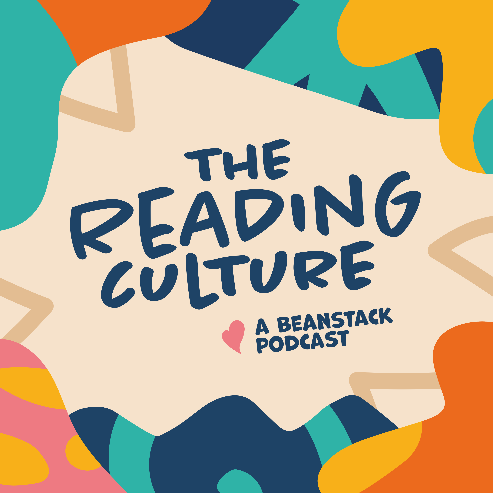
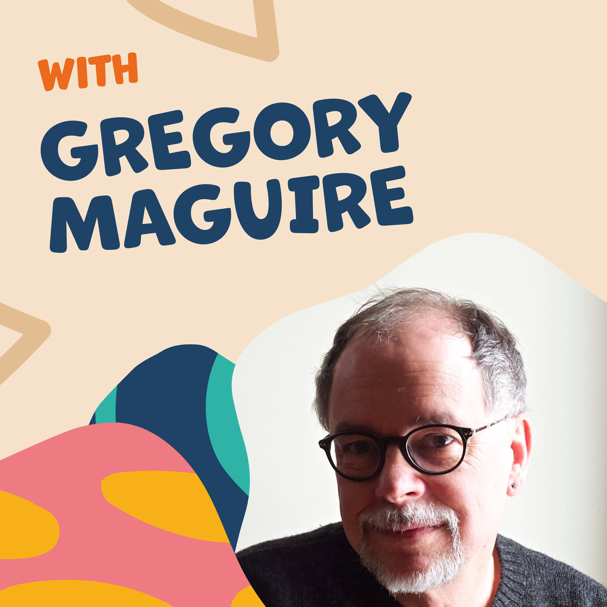
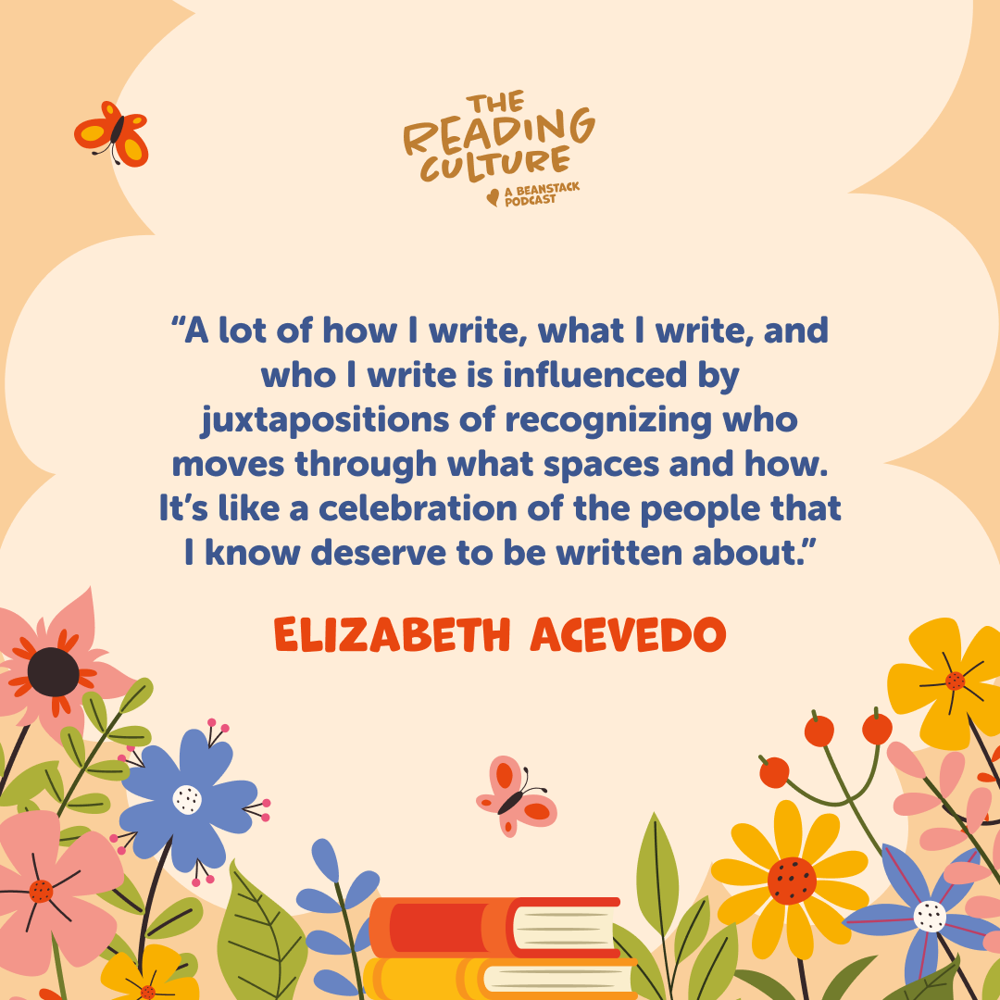
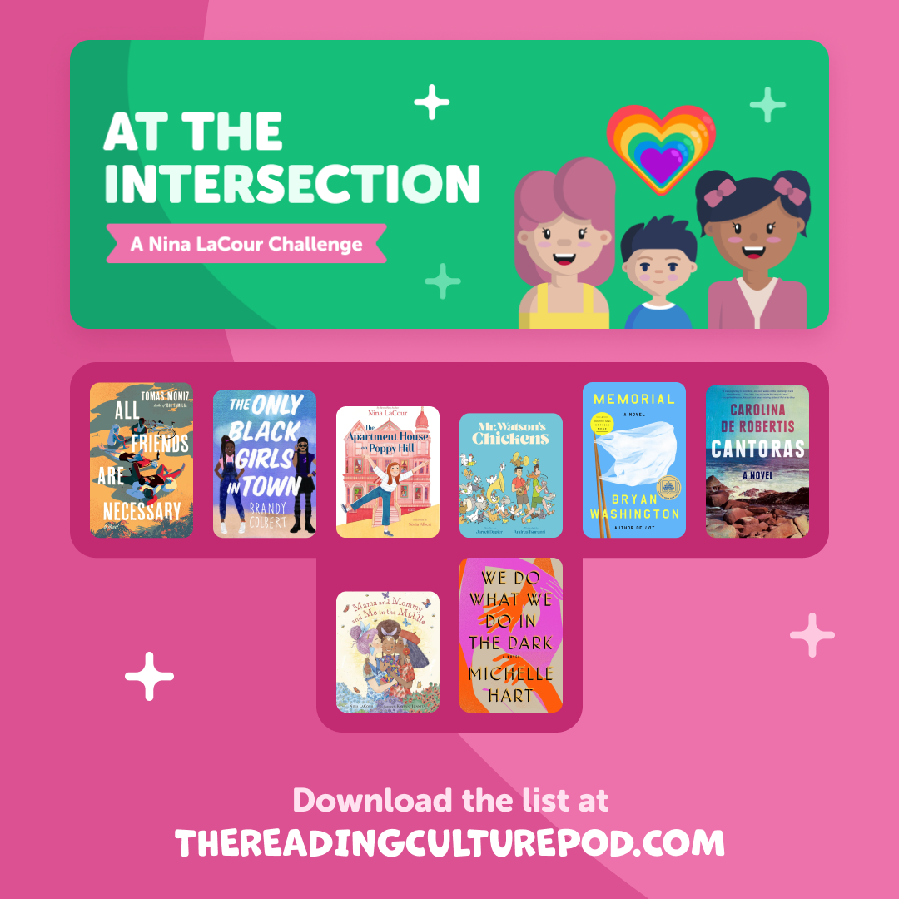
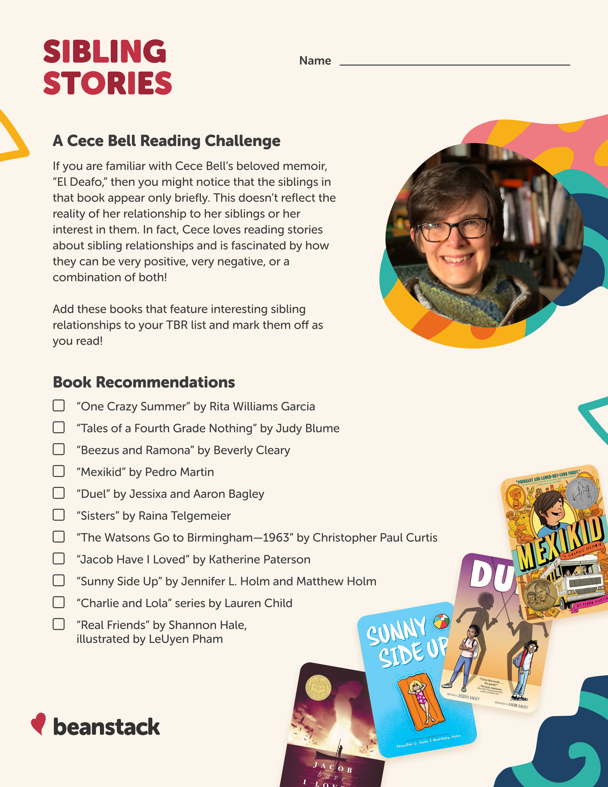
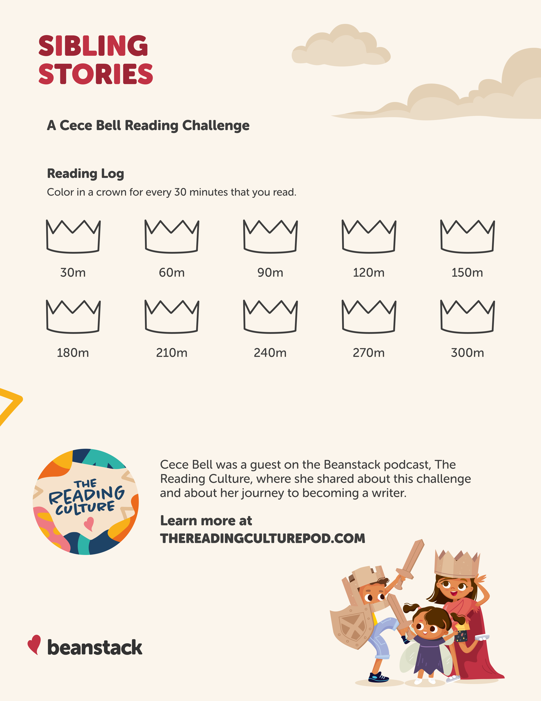

For the Reading Culture Podcast, I created the podcast cover image and episide art. Each episode had a reading challenge associated with it, and that would inform the theme for promotional social posts.





